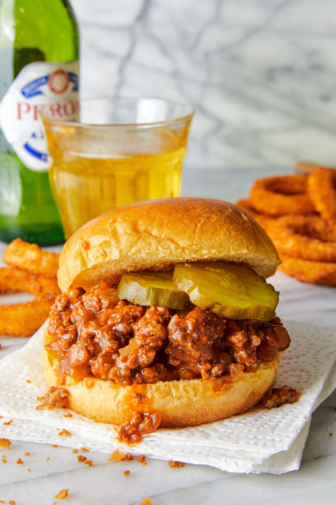

Sloppy Joe!

VERY simple and yummy sandwich
There's so many ways to make one of these, and I take the easiest way.
Ingredients
- 1 can of manwhich
- diced half onion
- Sliced pickles
- Ground turkey, beef, or chicken
- Choice of bun
Instructions
- separate, chop, and brown your choice of ground meat in a cast
iron skillet
-
- While it cooks, dice up onions and set up pickles
- Once the meat is properly cooked, add the sauce from the can and continue to cook
- Mix in diced onions once finished
- Bun up the mix, add pickles, and serve with choice of slaw, mac n cheese, or beans
Back